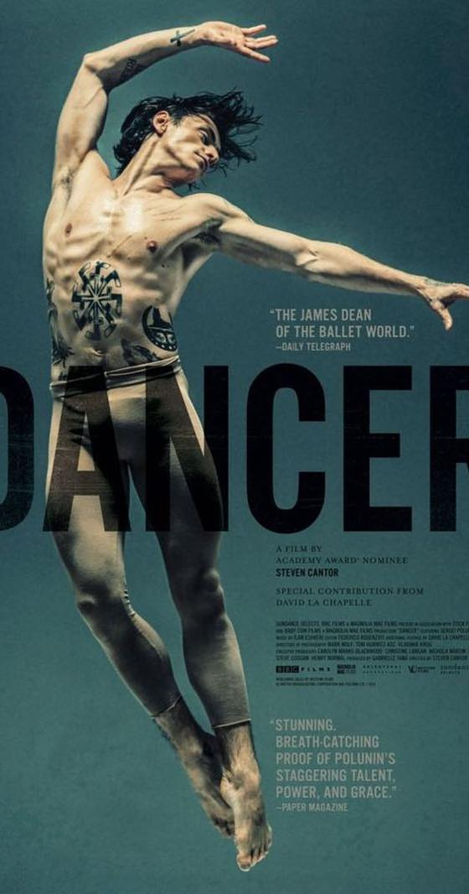
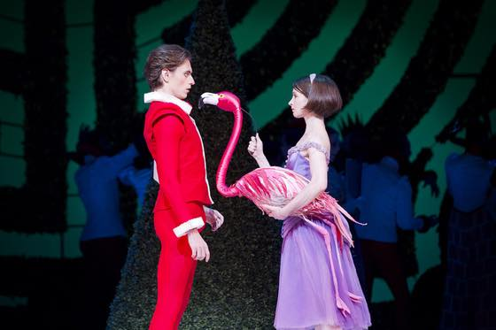
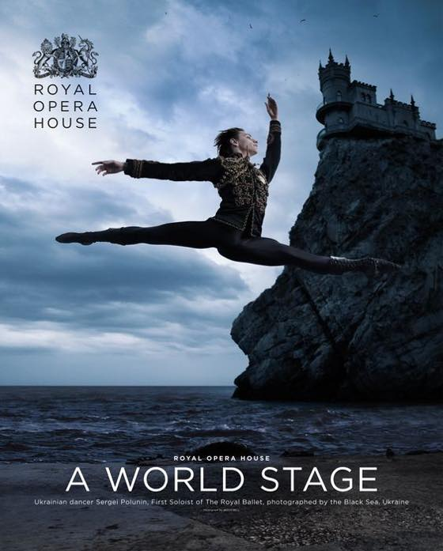

저의 넓고 얇은 관심들중 하나가 발레, 뮤지컬, 연극 등등 공연관람입니당 ^^**
춤도 못추고 운동도 못하고 노래도 정말 못불러서 ㅋㅋㅋㅋㅋㅋㅋ 잘하는 사람 보는걸 정말 좋아합니다 :D
세르게이 폴루닌에 관한 영화 입니다.
영국 로열발레단 사상 최연소 수석무용수 천재 발레리노 라고 소개하는군요.
학비를 대기위해 모든 가족이 뿔뿔히 흩어져서 일을 한다는게 어느나라나 부모마음은 다 똑같구나 싶고
어릴적부터 온 가족이 자기 하나만 바라보고 있다는 압박감이 어떨지 짐작이 안가네욤;;
11살부터 부모랑 떨어져서 종일 발레만 배우는 삶이라니 으어;;
예전 체코 놀러갔을때 묵었던 한인민박에서
피아노 신동인 7살? 10살? 아들을 위해 부모님이 온 유럽을 같이 돌아다니는 가족이 있고 (콩쿨 참가 연수 등등),
매년 3월 그 민박집에 묵으러 온다는 소릴 들었는데 거참;; 아티스트의 삶이란게 어떤건지 참으로 알 수 없습니다 @_@
가늘고 긴 사람을 좋아하는 저에겐 최고였습니다 ;ㅂ;
아니 몸선이 어쩜 저리 예쁘지 ㅜㅜ ㅜㅜ
기회가 되면 공연 보고 싶네요 ㅜㅜ ㅜㅜ
너무 잘해서 누구보다 빠르게 스타가 되었지만
가족과의 삶, 개인적 경험이 없는 불균형에서 오는 갈등이 인상깊었습니다
역시 세상이 다는 안줘...... ^^;;;;

내가 ROH에서 Alice's Adventures in Wonderland 공연을 2013년에 봤는데
로열발레 뛰쳐나오기전에 JACK역으로 출연했었구나 ;ㅂ;
사진에서 겁나 귀엽다 ㅋㅋㅋㅋㅋ

예쁜사진으로 마무리 ^^***